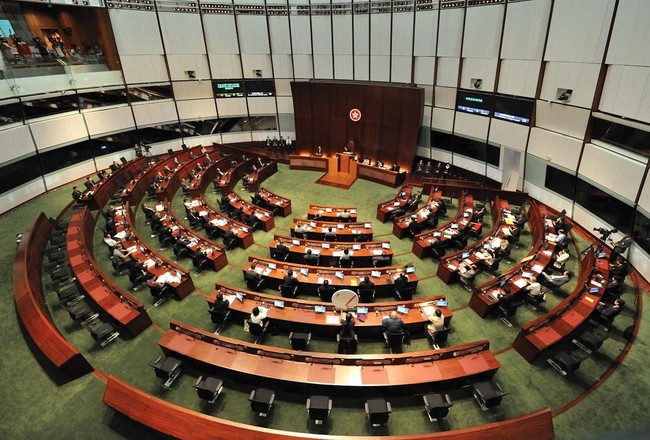
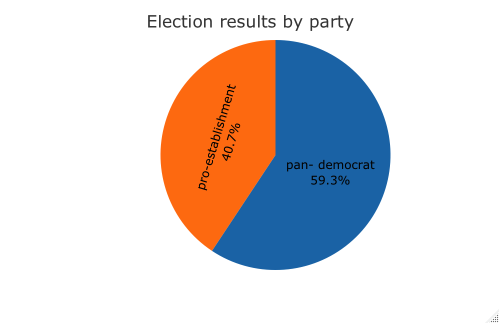
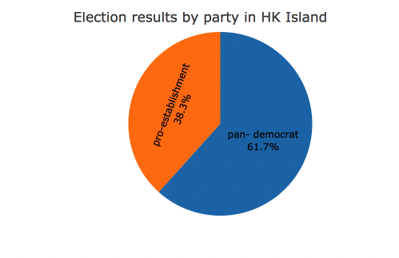
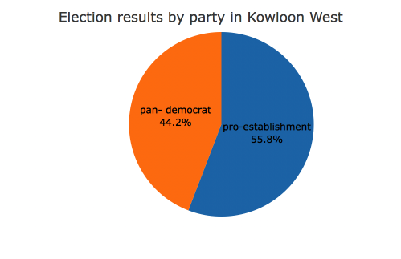
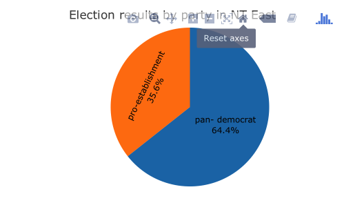

2018-04-19 Code Source
Mapping Practice
Introduction
Through calculation, I found that in the regions where the 2018 Hong Kong Legislative Council election results of all voting stations have released, pan-democrat party is more widely supported, as the winners from this party accounting for 59.3%.
Each of the three regions has more than three candidates, but from the map, we can see that interestingly in three regions, there is always a pan-democrat member competing with a pro-establishment member.
And the three pie charts clearly show that in Hong Kong Island and New Territories East, people advocate pan-democrat more than pro-establishment. But in Kowloon West, pro-establishment win the public’s support.
